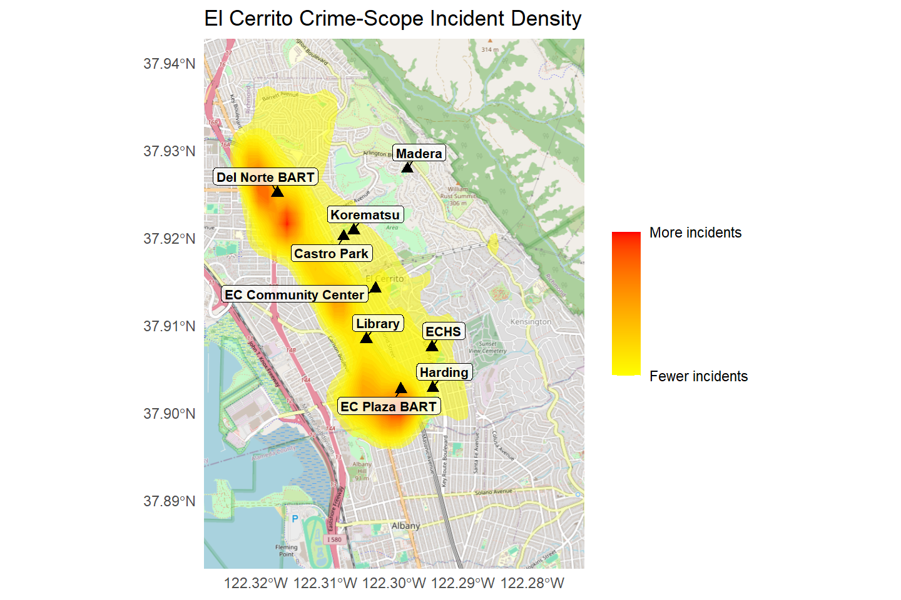
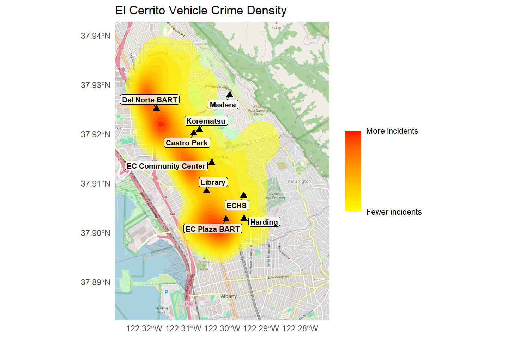
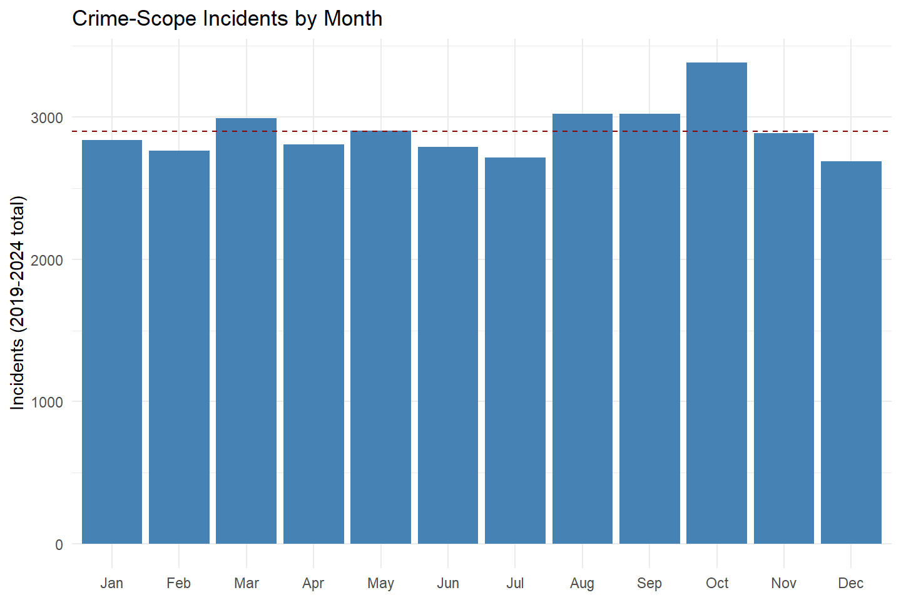

| Call Type | Count | % of Total |
|---|---|---|
| 1059 - Security Check | 23389 | 17.0 |
| 1195 - Traffic Stop | 18392 | 13.4 |
| 911dis - 911 Disconnect | 7578 | 5.5 |
| Parker - Parking Violation | 7325 | 5.3 |
| Unwant - Unwanted Person | 6186 | 4.5 |
| 1033a - Alarm Audible | 5695 | 4.2 |
| Follow - Follow Up | 4550 | 3.3 |
| 1154 - Suspicious Vehicle | 4468 | 3.3 |
| 415 - Disturbance | 4160 | 3.0 |
| Xfer - Call Transfer | 3994 | 2.9 |
El Cerrito Police Incident Analysis, 2019–2025
What the Data Shows About Police Activity, Response, and Geography
Introduction
This report analyzes every police incident logged by the El Cerrito Police Department from January 01, 2019 through June 30, 2025 – 137,194 records in total. It looks at four questions residents might reasonably ask about their local police department: what officers actually spend their time on, where activity is concentrated, how the pattern has changed over time, and how quickly the department responds when something happens.
This is not a crime-statistics report in the traditional sense. It treats the department’s own incident log as a dataset worth understanding on its own terms – most of what gets logged isn’t a crime at all, and that turns out to be one of the most interesting findings in the whole analysis.
A detailed technical appendix at the end of this report documents exactly how the underlying data was assembled, cleaned, and verified, including several real errors that were found and fixed along the way. That level of detail is there for anyone who wants to check the work; the sections below focus on what the data actually shows.
What Do El Cerrito Police Actually Do?
Before looking at where or when incidents happen, it’s worth asking a more basic question: what does the department actually spend its time on? The answer is not what most people would guess.
Of the 137,194 incidents in this dataset, only 27.8% fall into a category most people would call a crime – theft, burglary, assault, vandalism, and similar. The remaining 72.2% is patrol and administrative work: security checks, traffic stops, alarm responses, 911 disconnects, welfare checks, and calls that resolve before an officer arrives at all.
The single most common thing El Cerrito police respond to is a security check – an officer proactively checking that a building or area is secure, not responding to a report of anything wrong. Traffic stops are second. Together with alarm calls, 911 disconnects, and follow-up visits, these few categories alone account for close to half of everything the department logs. This is worth keeping in mind throughout the rest of this report: a “hot” location on the maps that follow reflects concentrated crime, specifically, not general police presence.
Where Does Activity Happen?

Crime-scope incidents concentrate heavily along the San Pablo Avenue corridor, El Cerrito’s main commercial spine, with the two clearest hotspots near El Cerrito Plaza BART and the cluster around the Library, El Cerrito High School, and Harding Elementary. Activity drops off sharply moving east into the hillside residential neighborhoods, where Madera and Korematsu sit.
| Landmark | Incidents within 500 ft |
|---|---|
| EC Plaza BART | 2298 |
| EC Community Center | 1802 |
| ECHS | 1235 |
| Library | 1029 |
| Harding | 786 |
| Del Norte BART | 557 |
| Madera | 525 |
| Castro Park | 364 |
| Korematsu | 294 |
Table 2 counts all police activity, not just crime, within 500 feet of nine community landmarks. One entry deserves a specific caveat: El Cerrito Del Norte BART sits directly on the city’s border with Richmond and includes its own dedicated BART Police substation. Incidents on BART property or across the Richmond city line are handled by a different department entirely and are not part of this dataset – so this number reflects only nearby off-station activity that happened to fall on the El Cerrito side, not the full picture of what happens at that station.
Vehicle Crime and Dangerous Driving
Vehicle crime (auto burglary, motor vehicle theft, carjacking) and dangerous driving (hit and run, drunk driving) are broken out separately below, since they represent genuinely different kinds of risk – property crime against a parked car versus danger from a car in motion.
| Landmark | Vehicle Crime | Dangerous Driving | All Other Crime | Total |
|---|---|---|---|---|
| EC Plaza BART | 29 | 14 | 368 | 411 |
| EC Community Center | 30 | 14 | 337 | 381 |
| ECHS | 8 | 11 | 305 | 324 |
| Library | 24 | 2 | 270 | 296 |
| Harding | 11 | 6 | 203 | 220 |
| Del Norte BART | 7 | 9 | 178 | 194 |
| Castro Park | 4 | 3 | 82 | 89 |
| Korematsu | 3 | 2 | 63 | 68 |
| Madera | 4 | 3 | 56 | 63 |
| Note: "All Other Crime" is every crime-scope category not already broken out as Vehicle Crime or Dangerous Driving -- for example assault, robbery, burglary not involving a vehicle, theft, and vandalism. |

EC Plaza BART and the Community Center lead in both vehicle crime and dangerous driving specifically, not just overall activity – a consistent pattern, not an artifact of one dominant category.
When Does It Happen?

Incident counts dropped noticeably during 2020–2022, bottoming out in 2022, before recovering to their highest levels of the period in 2023 and 2024. This report does not attempt to explain why – police staffing levels, changes in what gets reported, and actual changes in activity could all play a role, and disentangling them is beyond what this dataset can show on its own.
2025 is shown through June 30 only and should not be compared directly to the full-year totals above. On a fair like-for-like basis – January through June of every year – 2025 is actually the busiest first half of any year in this seven-year period, continuing the recovery rather than reversing it.

October stands out from the rest of the year – but not for the reason it might first appear. Breaking the October total down by category shows it’s driven almost entirely by parking enforcement, not a broad rise in crime. Parking violations get their own section below, since they turned out to be one of the more striking trends in the whole dataset.
Parking Enforcement: A City on the Move

Parking violations more than tripled over the period covered by this report, from 568 in 2019 to 1772 in 2024. The growth is not gradual – it happened in two distinct jumps rather than a steady climb, which points to specific operational changes at identifiable points in time rather than organic drift. A closer look at the timing of those changes is a natural next step for a future update to this report.

Is Enforcement Concentrating Near El Cerrito Plaza?
With talk locally of a parking district near El Cerrito Plaza, it’s worth asking directly: is a growing share of citywide parking enforcement actually concentrating there? To check, every geocoded parking violation was measured against its distance from the Plaza BART station.
| Year | Citywide Total | Within 1,000 ft of Plaza | % of Citywide Total |
|---|---|---|---|
| 2019 | 565 | 59 | 10.4 |
| 2020 | 633 | 49 | 7.7 |
| 2021 | 831 | 97 | 11.7 |
| 2022 | 730 | 71 | 9.7 |
| 2023 | 1507 | 86 | 5.7 |
| 2024 | 1770 | 148 | 8.4 |
| 2025 | 1273 | 85 | 6.7 |
| Note: 2025 reflects only January through June (a partial year). The percentage column is not affected by this, since both the citywide total and the near-Plaza count are equally partial. |
The answer is no – at least not so far. The share of citywide parking tickets written within 1,000 feet of the Plaza has not risen over this period; if anything, it is somewhat lower in 2025 than it was in 2019. The raw number of tickets near the Plaza has grown, but that simply reflects the citywide tripling described above, not extra concentration in that specific area. Whatever is driving the parking-district conversation, this dataset does not show enforcement disproportionately shifting toward the Plaza.
How Fast Do Police Respond?
The department’s median response time across all in-scope incidents is 5 minutes, and 90% of responses arrive within 25 minutes. For calls involving active, in-progress danger specifically – shots fired, an armed assault, a robbery, a carjacking, a shooting with an actual victim – the median response is 5 minutes, consistently fast across every one of those categories.
A word of caution for anyone comparing response times across years: a naive year-by-year average makes it look like response times dramatically improved, dropping from around 7 minutes in 2019 to 2 minutes in 2025. That apparent improvement is misleading. It’s driven almost entirely by the huge growth in parking enforcement described above – writing a parking ticket involves no dispatch or travel time, so as parking violations became a larger share of everything logged, the citywide average mechanically dropped without response to genuine emergencies actually getting any faster. Looking only at incidents that involve a real dispatch and response, the department’s response time has been stable, not dramatically changing, across the entire seven-year period – a consistent, reliable finding rather than a flashy but misleading one.
Conclusion
Four findings stand out from this analysis. First, most of what El Cerrito police do isn’t crime response at all – fewer than three calls in ten fall into a category most residents would call a crime; the rest is patrol, traffic enforcement, and administrative work. Second, crime-scope activity concentrates heavily along the San Pablo Avenue corridor, with the sharpest drop-off in the hillside residential areas – and when a landmark’s number looks surprisingly low, as with Del Norte BART, it’s often because of a real jurisdictional boundary, not because nothing happens there. Third, parking enforcement has more than tripled citywide since 2019, but that growth is broad-based rather than concentrated near El Cerrito Plaza specifically, at least through the period this report covers. Fourth, the department’s response to genuinely dangerous, in-progress incidents is fast and consistent, holding steady across the whole period studied, even as the overall mix of what gets logged has shifted substantially.
This report will be updated with a second analysis covering July 2025 through June 2026 once that data becomes available.
Technical Appendix
This appendix summarizes how the underlying dataset was built, cleaned, and verified. It is intentionally more detailed than a typical report appendix, because several real data-quality problems were found and fixed during this project, and the goal here is to show that work rather than hide it.
Data Source
Source data was 13 half-year PDF reports from the El Cerrito Police Department, covering January 01, 2019 through June 30, 2025. Two extraction defects were found and corrected in the initial PDF-to-spreadsheet conversion: a small share of addresses were truncated when they wrapped across a line in the source PDF, and the first one or two rows on nearly every PDF page were initially dropped entirely. Both were caught by independently re-extracting the data and diffing the two versions against each other and against the raw PDF text directly, then verified file-by-file across all 13 source documents.
After combining and deduplicating (including 376 rows that were genuine duplicates spanning a source-file boundary in mid-2020), the working dataset contains 137,194 unique incidents.
Incident Categories
This report distinguishes between the full incident log and a crime-scope subset of 38,075 incidents, built from a 52-category list of genuine crime types (excluding administrative categories like security checks and traffic stops, and also excluding financial crimes such as identity theft, since those are typically logged at the victim’s home address rather than a crime scene and would distort a geographic analysis).
Geocoding
Street addresses were converted to map coordinates using the ArcGIS World Geocoding Service. An initial geocoding pass revealed that, without a geographic constraint, the service would sometimes match an ambiguous address (an intersection referenced by a local abbreviation, or a generic place name) to a same-named location anywhere in the world, with full confidence – one address matched the country of Panama, another matched a park in Australia. Adding an explicit geographic boundary to the geocoding request and re-processing the affected addresses resolved the large majority of these cases; a final distance-based check excluded any remaining addresses that could not be reliably placed. In total, 132,996 of 137,194 incidents (96.9%) were successfully and reliably geocoded.
Community landmarks used in the geographic analysis were verified by hand against independent sources rather than accepted on the geocoding service’s confidence score alone. This caught one landmark (Korematsu Middle School) where the service returned a maximum-confidence match on the correct current address, but an outdated underlying coordinate that still pointed to the school’s location prior to a relocation roughly a decade ago – corrected manually after independent verification.
Limitations
This dataset reflects only incidents logged by the El Cerrito Police Department within city jurisdiction. Activity occurring on BART property, across the Richmond city line, or handled by a different agency is not captured here, which is worth keeping in mind when interpreting any single landmark’s numbers, particularly El Cerrito Del Norte BART. Response-time figures are based on the subset of incidents with complete timestamp data (88.3% of crime-scope incidents); a small number of long-delay outliers, consistent with reports made well after an incident occurred rather than an active emergency, were identified and are described in supporting project documentation.